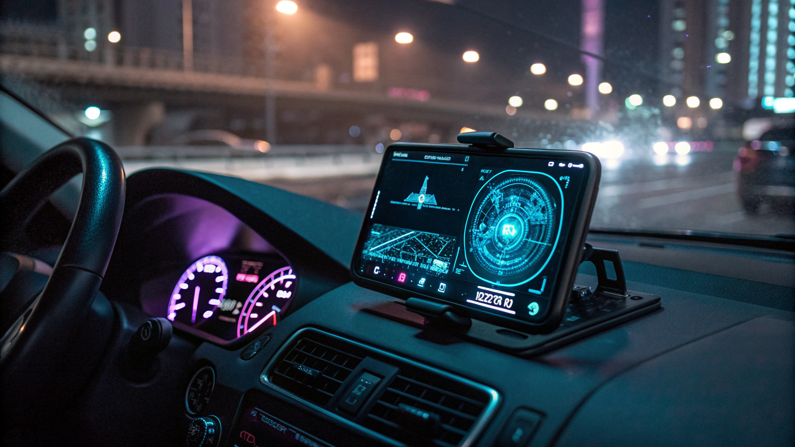

Riduci Sprechi di Tempo e Costi Operativi con AURA Proximity: La Guida per Motociclisti, Camperisti, Atleti e Responsabili Sicurezza Cantieri

Riduzione drastica degli sprechi di tempo e costi di gestione con AURA Proximity per Motociclisti, Camperisti, Atleti, Responsabili sicurezza cantieri (D.Lgs 81/08) e Guide Outdoor
- Le criticità operative in viaggi di gruppo e attività outdoor aumentano rischi e ritardi in assenza di tecnologie efficaci.
- Il mancato intervento rapido in casi di cadute o incidenti aumenta costi e potenziali danni irreversibili.
- AURA Proximity offre una soluzione integrata e senza app per migliorare sicurezza, comunicazione e gestione operativa, abbatte tempi e costi.
Analisi approfondita della notizia e delle implicazioni operative
Nei settori della mobilità outdoor e della sicurezza sul lavoro, le difficoltà legate a comunicazioni inefficaci e al monitoraggio dei membri di un gruppo rappresentano un grave problema operativo. Motociclisti in colonna, camperisti itineranti, atleti impegnati in sport all’aperto, responsabili della sicurezza in cantieri e guide outdoor spesso si trovano ad affrontare condizioni di scarsa copertura cellulare, assenza di reti 4G e situazioni di isolamento. Questi fattori aggravano il rischio di perdite di tempo dovute a rallentamenti, mancate segnalazioni di incidenti e difficoltà nella coordinazione.
La notizia di recente rilievo evidenzia come la mancanza di strumenti tecnologici adattati a questi scenari operativi possa comportare inefficienze critiche, soprattutto in situazioni di emergenza dove la tempestività del soccorso è essenziale. Inoltre, l’instabilità della rete cellulare sui sentieri o in aree remote rende obsolete molte soluzioni di comunicazione tradizionali basate su app mobile, costringendo a rimanere legati a metodi inefficienti e dispendiosi in termini di tempo e risorse.
Le conseguenze e i costi di non agire
Non adottare strumenti adeguati comporta un aumento esponenziale dei costi operativi e dei rischi per la sicurezza. Perdersi durante viaggi in colonna, incidenti non rilevati, cadute senza soccorso tempestivo per lavoratori isolati possono generare ritardi nelle attività e conseguenze legali dal punto di vista delle normative sulla sicurezza, come il D.Lgs 81/08. Inoltre, l’inerzia nel risolvere questi problemi amplifica sprechi di tempo e costi aggiuntivi legati a ricerca, soccorso e gestione delle emergenze.
Dal punto di vista economico, l’assenza di comunicazioni e rilevamenti in tempo reale obbliga a procedure manuali di coordinamento e verifica spesso poco efficaci. I ritardi nella segnalazione degli incidenti aumentano i costi indiretti dovuti a interruzioni di flussi lavorativi e organizzativi, penalizzando la produttività generale e la reputazione aziendale o personale nei contesti outdoor. Inefficienze di questo tipo provocano inoltre stress operativo e peggiorano la qualità dell’esperienza per motociclisti, camperisti e gli altri professionisti coinvolti.
Come AURA Proximity risolve il problema
AURA Proximity di RM Studio si presenta come la soluzione tecnologica integrata, semplice e innovativa per tutte queste criticità operative. Si tratta di un sistema che combina un radar tattico di prossimità con una chat Mesh Peer-to-Peer 100% Web, eliminando la necessità di scaricare app e funzionando direttamente via browser su qualsiasi dispositivo. Questa caratteristica riduce drasticamente i tempi di setup e i costi di gestione IT, facendo risparmiare tempo prezioso prima e durante le missioni o gli spostamenti.
Le funzionalità chiave di AURA Proximity includono:
- Radar tattico di prossimità: monitoraggio in tempo reale della posizione degli utenti con dettagli di vicinanza e allerta per possibili separazioni o rallentamenti del gruppo.
- Chat Mesh P2P 100% Web: comunicazione diretta tra i dispositivi anche in assenza di rete cellulare, grazie alla collaborazione peer-to-peer decentralizzata, che garantisce copertura anche in aree fuori segnale 4G.
- Co-Pilota Vocale a mani libere: assistente vocale integrato che permette di gestire tutte le funzioni senza bisogno di interazioni manuali, aumentando la sicurezza mentre si è alla guida o in movimento.
- Rilevamento impatti e cadute Man-Down (>3G): sistema automatico che individua incidenti gravi e invia SOS immediato tramite WhatsApp ai contatti predefiniti, riducendo i tempi di intervento.
- Bussola direzionale 3D: orientamento preciso per agevolare la navigazione e la comunicazione sulla posizione esatta in ambienti outdoor difficili.
Tutto ciò permette di ridurre drasticamente i tempi inutili spesi in coordinamento e ricerca, oltre a minimizzare i costi generali per la gestione della sicurezza e della comunicazione in mobilità.
| Gestione Tradizionale | Con AURA Proximity |
|---|---|
| Comunicazioni limitate da rete cellulare 4G | Chat Mesh P2P funzionante senza rete cellulare |
| Coordinate manuali con possibili errori | Bussola 3D e radar tattico per posizionamento preciso |
| Alto rischio tempi di ritardo per soccorsi | Rilevazione automatica cadute con SOS WhatsApp immediato |
| Necessità di app dedicate e complessi setup | Funzionamento via browser, nessuna app da installare |
| Costi elevati di training e gestione | Setup rapido, interfaccia intuitiva e risparmio costi IT |
💡 Ti è stato utile questo approfondimento?
Condividilo con un collega o un amico del settore Motociclisti, Camperisti, Atleti, Responsabili Sicurezza Cantieri (D.Lgs 81/08) e Guide Outdoor a cui potrebbe interessare!
FAQ - Domande frequenti su AURA Proximity
1. AURA Proximity funziona anche senza connessione internet?
Sì, grazie alla tecnologia Mesh P2P, il sistema consente comunicazioni e condivisione dati anche in assenza di rete 4G o Wi-Fi tradizionale.
2. È necessario scaricare un’app per usare AURA Proximity?
No, tutte le funzionalità sono accessibili via browser web, eliminando problemi di installazione e compatibilità software.
3. Qual è il costo e quali piani sono disponibili?
Sono disponibili un Pass Viaggio Singolo a €4.90 e un Piano Pro mensile a €19, tariffe che garantiscono ottimo rapporto qualità-prezzo per sicurezza e comunicazione avanzata.
Inizia Subito
Pass Viaggio Singolo a €4.90 o Piano Pro a €19/mese. Nessuna app da installare.
Fonti Ufficiali e Risorse Esterne
Scopri l'Intelligenza Artificiale per la tua attività
Ottimizza i processi e aumenta le vendite con le soluzioni B2B di RM Studio.
Scopri AURA Proximity